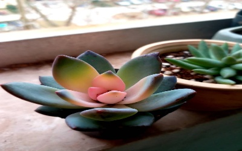
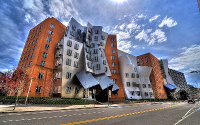
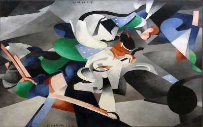
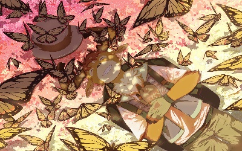
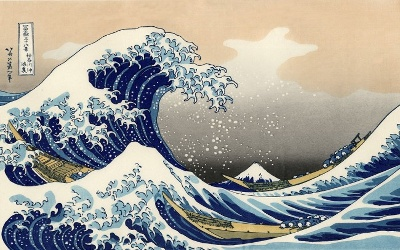
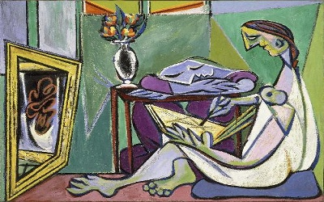
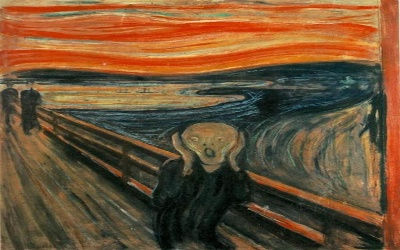
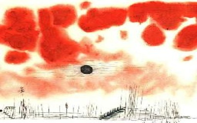
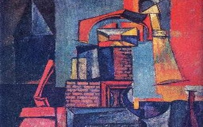

Style Transfer
MyArtist风格迁移
您好，董建文
退出登录
移动端访问时可能会出现问题
Stylize an image
Combine two styles
待迁移图片
选择内容图片
选择本机文件
huaxi
plant
great_arch
stata
diana
golden_gate
beach
scu
chicago
statue_of_liberty
风格图片
选择一个风格
选择本机文件
随机图片(wikiart.org)
udnie
ink_painting
butterfly
wreck
wave
rain_princess
la_muse
scream
stripes
bricks
clouds
towers
sketch
seaport
red_circles
zigzag
我的图册
Our mm
待迁移图片预览
华西钟楼

植物
圣路易斯大拱门

斯塔拉中心
戴安娜
金门大桥
海滩
川大
芝加哥
自由雕像
Our Mission
Our Missionmm
风格图片预览

udnie-弗朗西斯
水墨画

蝴蝶
破坏

波浪
雨中公主

拉姆斯

尖叫

云

塔
>
请先选择分类及迁移模型
正在加载风格模型，请稍候
Style A Size
Select a style
Select from file
Random image from wikiart.org
udnie
stripes
bricks
clouds
towers
sketch
seaport
red_circles
zigzag
Style B Size
Select a style
Select from file
Random image from wikiart.org
udnie
stripes
bricks
clouds
towers
sketch
seaport
red_circles
zigzag
Content image size
选择内容图片
选择本机文件
stata
diana
golden_gate
beach
chicago
statue_of_liberty
Stylization Ratio
Loading stylization model. Please wait..
[分类更快] Distilled MobileNet style model (9.6MB)
[分类更佳] Original Inceptionv3 style model (36.3MB)
退出登录
[迁移更快] Separable_conv2d transformer (2.4MB)
[迁移更佳] Original transformer model (7.9MB)
上传图片到我的画册
Take a snapshot!
×